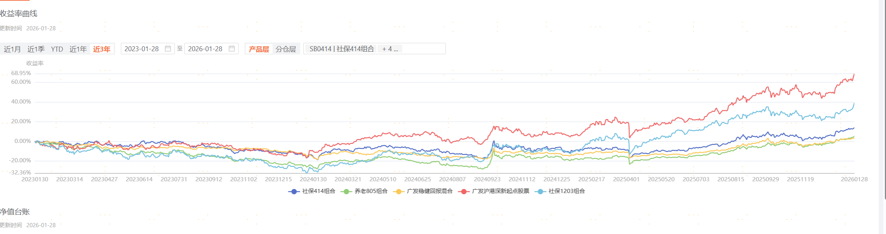

回测折线图

板块分析
点击折线图上的回撤标记点查看分析详情
组合回测分析
60%仓位做多黄金板块，40%仓位做多TMT板块，帮我分析历史的回撤
好的，我首先定义回撤的标准。
回撤定义：
回撤是指在某一时期内，投资组合净值从最高点到最低点的下跌幅度。最大回撤是指在选定周期内任一历史时点往后推，产品净值走到最低点时的收益率回撤幅度的最大值。
计算公式：
回撤率 = (峰值净值 - 谷值净值) / 峰值净值 × 100%
其次，让我查看您的回测当中有哪些回撤的时间点，并在图中标注出来。
主要回撤时间点：
2018年10月
- 回撤幅度: -15.3%
2020年3月
- 回撤幅度: -22.7%
2022年4月
- 回撤幅度: -18.9%
最后，让我调用历史文档分析这些时间点，在黄金和TMT板块都发生了什么。
综合分析：
从历史回撤数据来看，该组合在市场流动性收紧和风险偏好下降时期表现较弱。黄金板块虽然具有避险属性，但在美元强势周期和实际利率上行阶段承压明显；TMT板块作为高贝塔板块，在流动性收紧时首当其冲。
建议在组合中增加对冲工具，或根据宏观周期动态调整两个板块的配置比例。请点击图表上的标记点查看各时期的详细分析。
引用文档
×